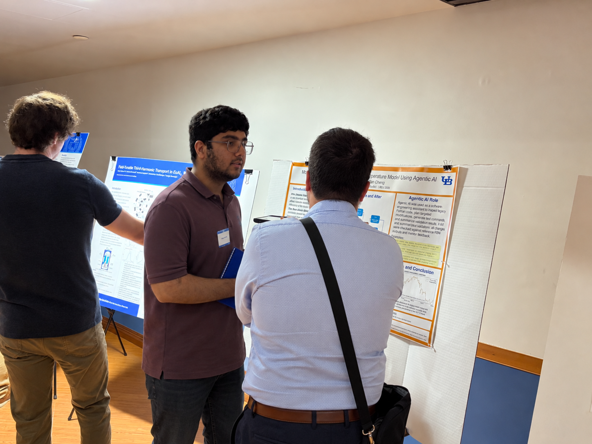

Mridul Wadhwa Completes Summer REU at a.c.t. hydro lab!
Congratulations to Mridul Wadhwa on completing his summer Research Experience for Undergraduates (REU) with a.c.t. hydro lab! A computer science undergraduate at the University at Buffalo, Mridul worked with Dr. Yifan Cheng and Junhao Wang on a project connecting modern computing tools with river temperature research.
His research focused on modernizing the River Basin Model (RBM), an established scientific model used to simulate river temperatures. Mridul developed new capabilities for working with modern datasets, streamlining model setup, and restarting simulations from saved states. Together, these contributions make the model more flexible for research and easier to use in modern modeling workflows. He also explored the use of agentic AI as a supporting tool in scientific software development.
Throughout the summer, Mridul shared his research through presentations and discussions, gaining experience in both interdisciplinary research and scientific communication. We are excited that he is continuing his research with the lab during the academic year and look forward to seeing this work develop further!
